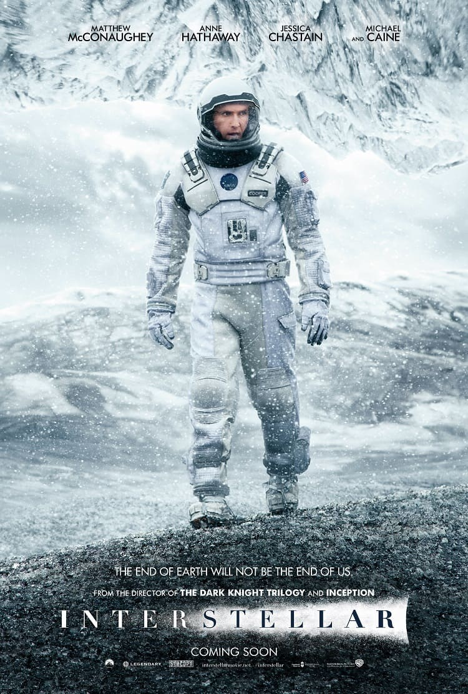
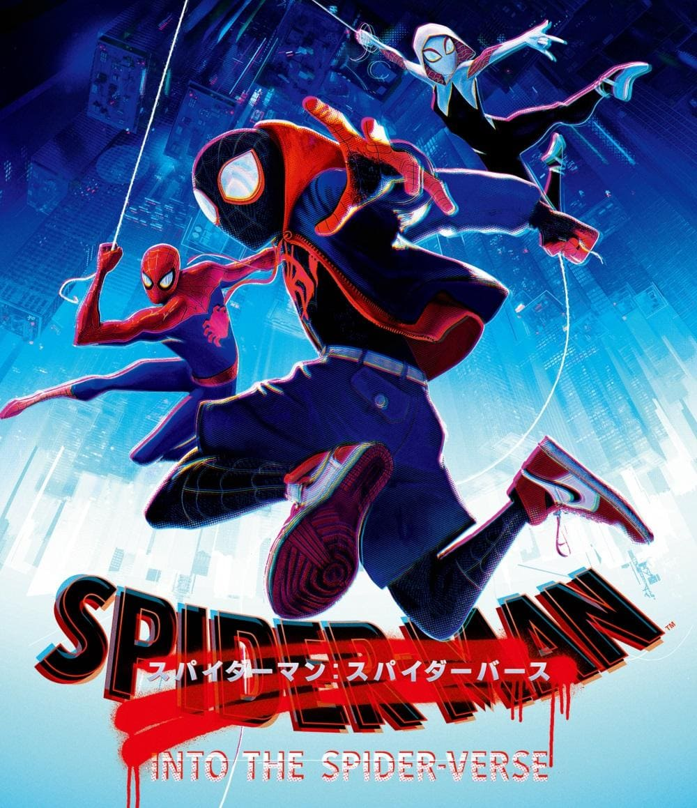

RECOMMENDED MOVIES

インターステラー
劇的な環境変化による食糧危機が発生し、人類は存亡の危機を迎えていた。そこで、人々は居住可能な新たな惑星を探すという危険なミッションに挑むことに。選ばれたのは元パイロットのクーパーらわずかなクルーのみ。クーパーは幼い娘を地球に残して宇宙へと旅立ち、やがて水の存在する惑星にたどりつく。
感動した。
映像はリアリティとCGのバランスが良く、美しくもミステリアスな音楽と相まって、呼吸を忘れる程にのめり込んで観ていた。
そしてこの作品は、宇宙という想像もつかない距離を超えた「愛」の物語であり、ラストは誰も予想できない展開で、これがSF映画だということを痛感させられるだろう。
ちょっと待ってね

スパイダーマン
スパイダーバース
ニューヨーク、ブルックリン。マイルス・モラレスは、頭脳明晰で名門私立校に通う中学生。彼はスパイダーマンだ。しかし、その力を未だ上手くコントロール出来ずにいた。そんなある日、何者かにより時空が歪められる大事故が起こる。その天地を揺るがす激しい衝撃により、歪められた時空から集められたのは、全く異なる次元＝ユニバースで活躍する様々なスパイダーマンたちだった――。
映像がスゴイ！
コミックの雰囲気とアニメーションの融合が素晴らしく、とにかくテンポが良い。
全体的に彩度が強めでアート的な側面もあり、どの場面も絵になるところも観ていて楽しめるポイントだ。
そしてスパイダーマン映画らしいユーモアやメッセージ性もあり、スパイダーマン映画史上最高傑作の声も納得の１作だ。
ちょっと待ってね